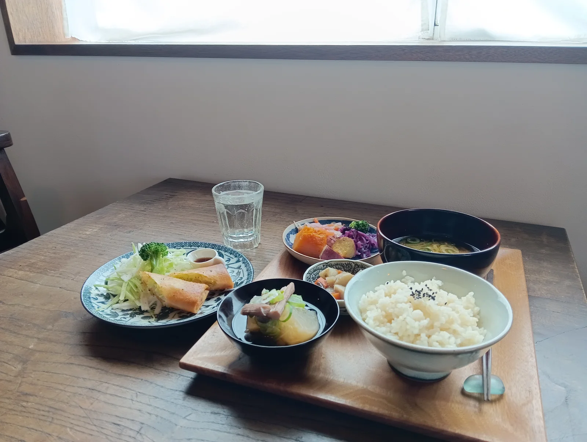
昼食と夕食
ひと皿ごとに、
季節をいただく。
野菜を中心にしたおかず、カレー、
ごはんと汁もの。
その日の食卓をお楽しみください。
- 昼食
- 12:00〜14:00 ラストオーダー
- 夕食
- 17:30〜 ご予約のみ
夕食は前日までに、2名様以上でご予約をお願いいたします。
ご予約について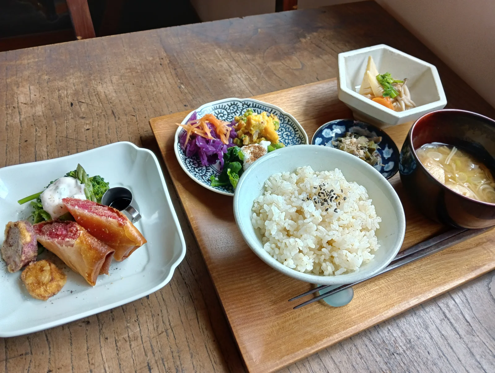
一 冬の日について
土に触れ、野菜を育て、料理をする。
「冬の日」の食卓は、種まきから始まります。
新潟県上越市の小さなお店で、
季節の料理と、喫茶の時間をご用意しています。
ひと皿を囲む時間を、どうぞゆっくりと。
Farmer’s table 冬の日
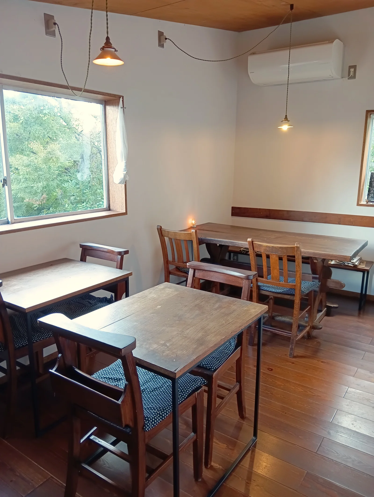
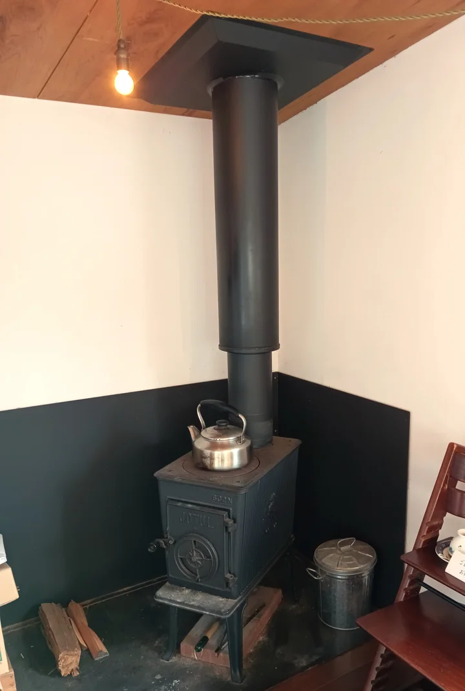
二 料理とメニュー
お食事に、お茶の時間に。
畑の恵みを味わいながら、
思い思いのひとときを。

昼食と夕食
野菜を中心にしたおかず、カレー、
ごはんと汁もの。
その日の食卓をお楽しみください。
夕食は前日までに、2名様以上でご予約をお願いいたします。
ご予約について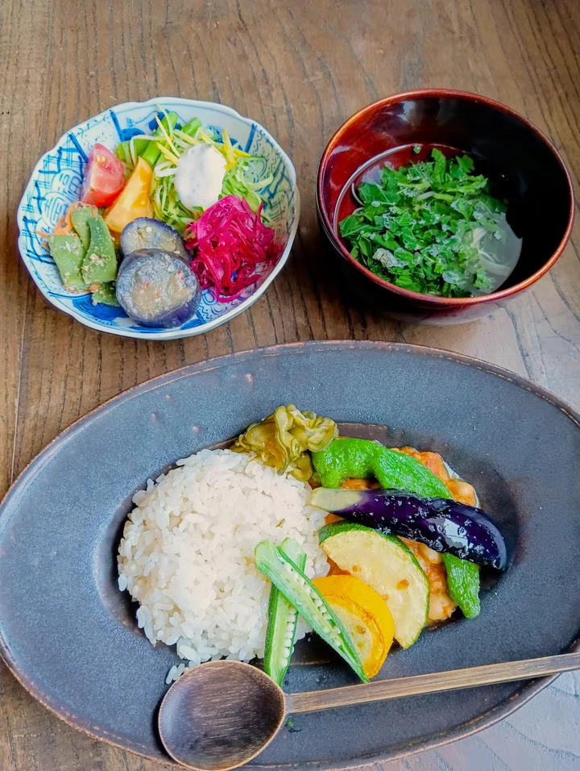
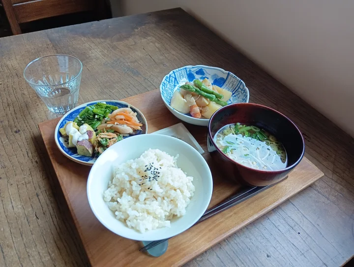
畑と台所は、
ひとつづき。
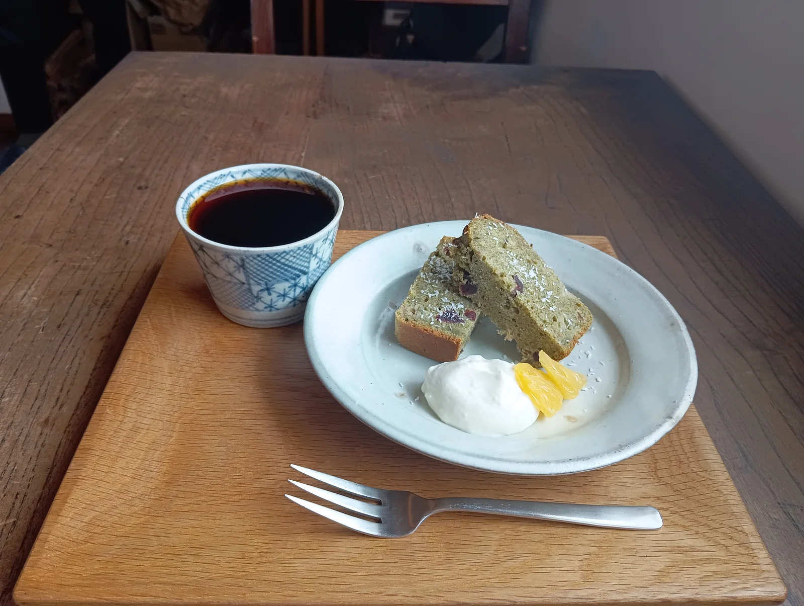
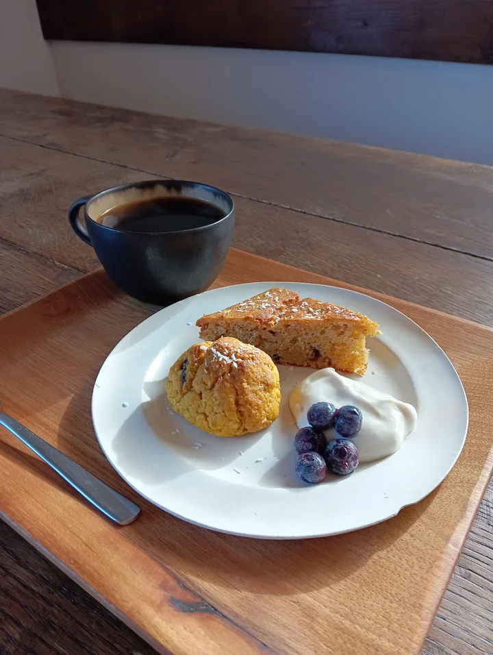
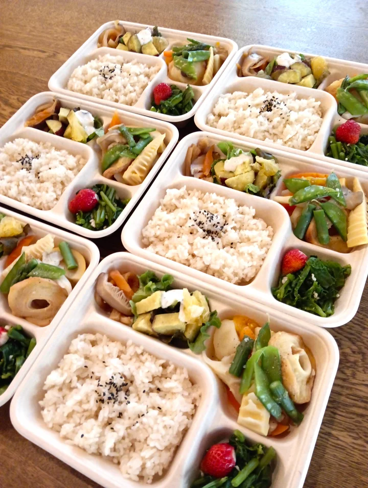
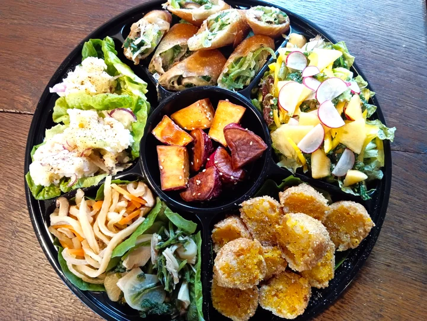
お弁当・オードブル
お弁当は4つ以上から、オードブルは1つから配達を承ります。旧上越市で、30分以内にお届けできる範囲が目安です。
店頭でのお受け取りには割引もございます。肉や卵の入ったものをご希望の場合も対応できますので、お気軽にご相談ください。
お電話でご相談
三 畑と野菜販売
農作業体験型の野菜販売
2025年から、週に1回程度、農作業をお手伝いいただく形で野菜をお届けしています。
自分で収穫した野菜には、買うだけでは出会えない楽しみがあります。草取りや季節ごとの作業を通して育つ姿を知ると、いつもの食卓も少し豊かに。生のままでも、ゆでるだけでも、おいしく感じられるから不思議です。
一から畑を始めるのは難しいけれど、土に触れてみたい。顔の見える関係の中で、新鮮な野菜を楽しみたい。そんな方は、お気軽にお尋ねください。

週に1回程度
6月〜11月
7〜8種類
基本的に年間契約となります。
1〜5月は不定期、またはお休みの時期があります。
営業時間
ご予約の場合は、上記以外のお時間もご相談いただけます。
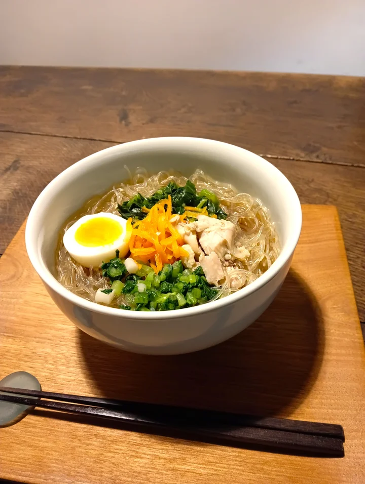
夜喫茶のご案内
3月から11月の、第2・第4金曜日。
いつもより少し遅い時間に、冬の日でお待ちしています。
18:30〜20:00 ラストオーダー
五 店舗情報・地図
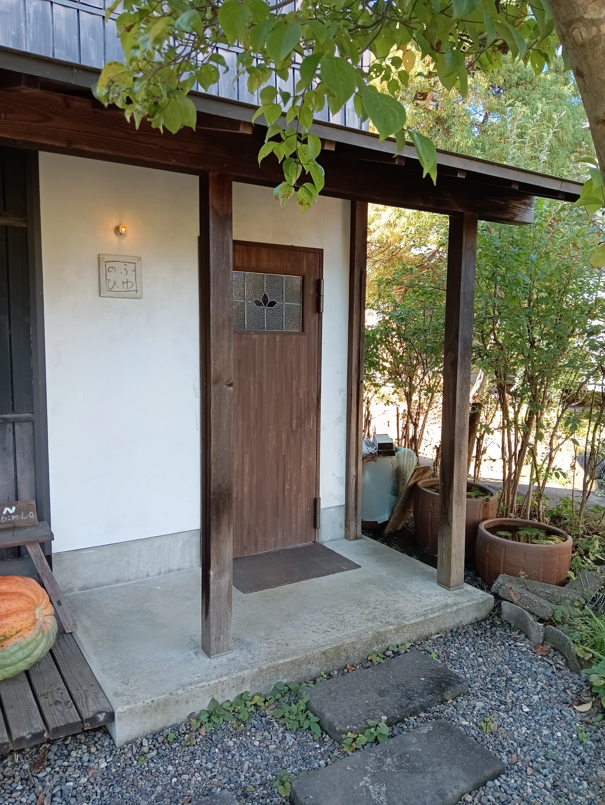
Farmer’s table
〒943-0142
新潟県上越市下新町1057-2
駐車場が手狭のため、できるだけ乗り合わせでお越しください。複数台の場合は、縦列駐車をお願いすることがございます。
ご予約・お問い合わせ
お食事のご予約、お弁当や野菜販売のご相談も、
どうぞお気軽にお電話ください。